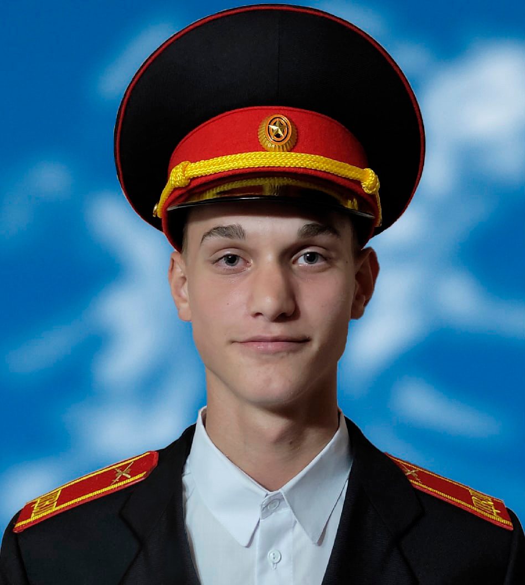

Я люблю редактировать фотографии, но делаю это не очень часто, скорее в свободное время.
Занимаюсь этим не более чем на любительском уровне, потому что не хотел бы работать в этой сфере,
или же просто расти до проффесионального уровня отдавая этому большинство времени,
это мой своеобразный отдых и развлечение Можете посмотреть мои работы на этой странице
Компьютерные игры
Конечно я увлекаюсь компьютерными играми, люблю стратегии и поигрываю в dota 2,
в hoi 4 не играю, поэтому на улицу выхожу, так же иногда играю в некоторые шутеры
вроде pubg или valorant
Спорт
Я всегда стараюсь заниматься спортом, раньше это было связано с учебой, а сейчас я обязательно хожу на тренировки,
так как учеба в большинстве сидячая и нужно следить за здоровьем
Программирование
Это моё главное увлечение. Мне очень это нравится и постоянно хочется совершенствоваться в этом,
а в последствии сделать это своей основной деятельностью
Биография
Меня зовут Данил, мне 17 лет я учился в харцызской школе №22. Я выучился 9 классов и решил что я хочу пойти в МЧС.
С этими мыслями я ушёл после 9 класса и поступил в Донецкий военный лицей (на 10-11 класс).

На очном обучении я проучился чуть меньше года, далее было дистанционное обучение. Я думаю именно это повлияло на меня
и в последний момент я понял - мне больше интереснее связанное с компьютером, в связи с чем решил поступать в университет
на факультет связанный с информатикой. Вот так я попал в университет где учусь сейчас, я очень доволен своим решением.